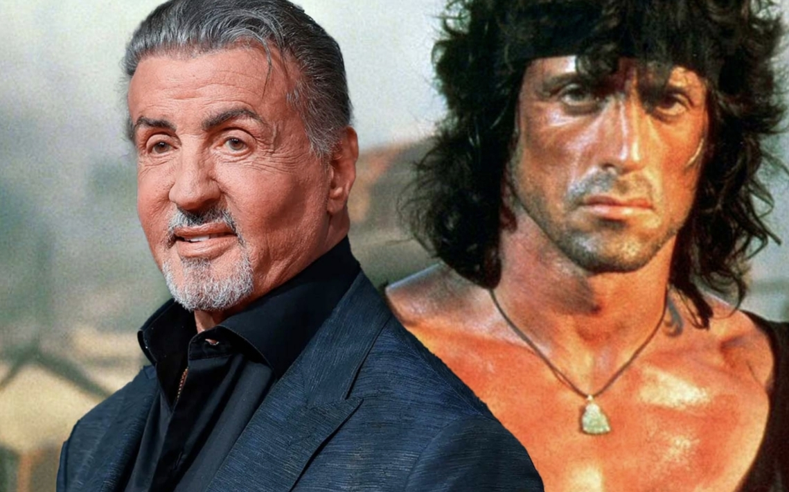
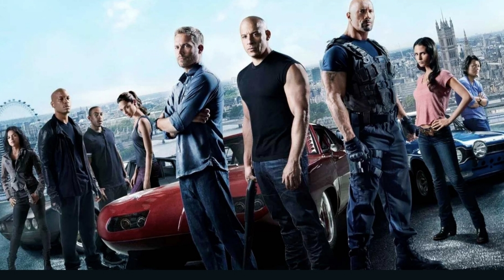

A saga Rambo é um dos maiores ícones do cinema de ação. Sylvester Stallone interpreta John Rambo, um veterano de guerra traumatizado que se envolve em missões perigosas e luta contra injustiças.
Os filmes combinam ação intensa, drama emocional e críticas sociais sobre os efeitos da guerra.

Uma das franquias mais bem-sucedidas da história do cinema. A série acompanha Dominic Toretto e sua família em corridas de rua, assaltos ousados e missões de alto risco ao redor do mundo.
Os filmes são famosos por cenas de ação espetaculares, carros tunados e o tema de "família".